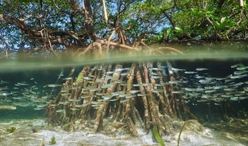

Tips and tricks made for The Philippine government
Wasting money is a major problem that all of us always do, from buying things we do not need or things that are literally useless to wasting money on a gold digger. But the Philippine government seems to be so competitive on that wasting money trend, they even bought a ton of crushed sedimentary rocks that costs millions of pesos for a project on Manila bay amidst a global pandemic. The project aims to build an artificial white sand beach for the “beautification” of Manila bay. Well, the Philippine government is just doing their very best, as you can clearly see, those millions of pesos could not have gone to other more important things. But I think that there is a better alternative to those crushed dolomites, I am talking about our childhood favorite, white sugar. Not only because it is unique, but it is also finer, whiter, less risky, more helpful and has a greater impact than those crushed stones.
The Philippine government just spent a very little amount of money for the project, just around 389 million pesos only. That 389 million pesos is not a big deal since our country is very very rich, as you can clearly see the Philippine government’s debt stood at just around 9.615 trillion pesos as of 2020 and that is why no one here in the Philippines suffer from poverty. Dolomites cost about 60 pesos per ton while sugars cost about a lot more per ton. So, you are wondering now that why white sugar is a better choice if it costs a lot more, well as I said, our government is very rich so that extra cost would not bother them and also, white sugars will have a better impact than crushed dolomites so it is worth the money.
First of all, those millions of pesos that will be spent for white sugars will go to the hands of our hard-working farmers. Not only it can make the bay more beautiful, but it also helps to solve poverty since farmers earn a lot of money from farming. Farmers in our country earn a whopping 8 000 pesos a month! For 9 to 24 months of planting, irrigating, caring, and harvesting, this average salary seems to be more than enough for them that some cannot buy their own food. I think this is the reason why our government do not want to increase the price of raw products, that farmers already earn “a lot” of money and an increase in their earnings would make them the next “Kuya Will.”
Secondly, crushed dolomites pose some serious health problems for an individual compared to white sugars that are literally harmless to us. A study shows that crushed dolomites can cause some health problems like respiratory issues, eye irritations and gastrointestinal problems. This can add to more problems that humanity is facing in the current time like a pandemic. Imagine going to the hospital because you inhaled some crushed dolomites then days later after your release at the hospital you find yourself cannot smell your favorite perfume nor taste your favorite snack. It is really scary to imagine that because you just inhaled some toxic dolomites, you go to the hospital because you have no choice then got infected by a deadly virus at the same hospital. It is really risky and it is better not to made any interaction with those crushed dolomites.
And lastly, an artificial beach made up of white sugar has better aesthetics than an artificial beach made up of crushed yellowish dolomites. White sugars are whiter and finer than crushed dolomites and white sugar also has a caramelization effect that makes it even more unique. After a week or two, those crushed dolomites became color black on other parts of the beach that looks terrible and disgusting. But with white sugar, every sunny morning, you will witness a beautiful melting of some sugars on the top layer, then you will have a free sweet caramel candy on every sunset. You and your girlfriend/boyfriend will enjoy beautiful sunsets with free candies as sweet as your relationship on its early days rather than those health-risky boring dolomites.
But in reality, white sugars will not solve it and would just be another waste of money. The real solution here is that they should have just planted mangroves, bought gadgets for students in the Philippines, and the money should have been distributed to the people who suffers from poverty.  Mangrove ecosystem has really a lot of good impact to our environment and could help solve a number environmental issues like increased CO2 in the atmosphere. Also a lot of students in the Philippines do not have their own gadgets to use for online schooling so buying laptops for them can solve problems in education right now. And finally, since a lot of people now are jobless and most of them are those who suffer from poverty, giving them cash incentives will help them survive while staying at home and prevent further covid-19 infections. We need to save and budget our money the right way even if there is no pandemic, we should prioritize the things we need and things that are beneficial to ourselves because in the future, we also are the ones who will benefit from it.